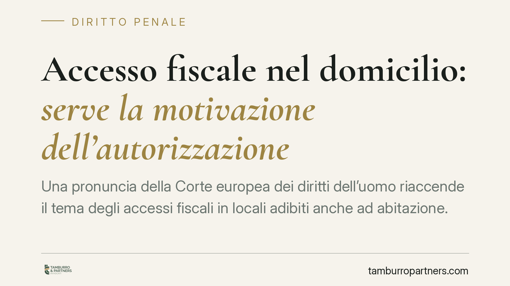

Accesso fiscale nel domicilio: serve la motivazione dell'autorizzazione
Una pronuncia della Corte europea dei diritti dell'uomo riaccende il tema degli accessi fiscali in locali adibiti anche ad abitazione. Il punto critico è l'autorizzazione del Procuratore priva di motivazione specifica, che può integrare un'ingerenza non giustificata nel domicilio tutelato dall'art. 8 CEDU. Una questione che riguarda da vicino imprenditori, professionisti e chiunque lavori da casa.

Il caso e la fonte
La materia torna d'attualità per effetto della giurisprudenza della Corte europea dei diritti dell'uomo (CEDU) in tema di accessi fiscali presso locali a uso promiscuo, cioè adibiti sia ad attività economica sia ad abitazione.
Una precisazione doverosa. Gli estremi esatti della pronuncia richiamata nella divulgazione (parti, numero di ricorso, sezione e data) non risultano a oggi univocamente verificabili dalle sole fonti secondarie. Prima di fondare qualunque iniziativa su una singola decisione, è opportuno individuarne con precisione gli estremi e leggerne il testo integrale: segnaliamo quindi il tema come orientamento in formazione, non come principio consolidato nell'ordinamento interno.
Il nucleo del problema è comunque chiaro: quando l'accesso tocca spazi che sono anche domicilio, l'art. 8 della Convenzione europea dei diritti dell'uomo impone che l'ingerenza nel domicilio sia prevista dalla legge, persegua uno scopo legittimo e risulti proporzionata. Un'autorizzazione generica o di mero stile può non superare questo vaglio.
Inquadramento normativo
In Italia la disciplina di riferimento è l'art. 52 del DPR 633/1972 (legge IVA), richiamato anche in materia di imposte dirette. La norma distingue tre situazioni.
Per gli accessi in locali destinati esclusivamente all'esercizio di attività economiche o professionali è sufficiente l'autorizzazione del capo dell'ufficio (o la qualifica degli operanti). Per i locali adibiti anche ad abitazione, cioè a uso promiscuo, serve l'autorizzazione del Procuratore della Repubblica. Per gli altri locali (ad esempio l'abitazione privata) l'autorizzazione del Procuratore presuppone gravi indizi di violazioni.
Il punto dirimente è che l'autorizzazione non è un passaggio puramente formale. Dove è richiesta a tutela del domicilio, deve dare conto delle ragioni dell'accesso. Un provvedimento privo di motivazione specifica è proprio ciò che l'art. 8 CEDU considera insufficiente a giustificare l'ingerenza.
Implicazioni pratiche
Il destinatario tipo è l'imprenditore individuale, il professionista con studio in casa, l'artigiano con laboratorio annesso all'abitazione. In tutti questi casi l'accesso della Guardia di Finanza o dell'Agenzia delle Entrate incide su uno spazio che è anche privato.
Due conseguenze meritano attenzione, da maneggiare però con cautela.
La prima riguarda l'utilizzabilità delle prove raccolte durante un accesso autorizzato in modo viziato. È un tema controverso nel contenzioso tributario: la giurisprudenza di legittimità, anche a Sezioni Unite, ha assunto in passato posizioni restrittive, non riconoscendo automaticamente l'inutilizzabilità. Il vizio dell'autorizzazione non si traduce quindi in modo lineare nell'esclusione degli elementi acquisiti: va valutato caso per caso.
La seconda riguarda il risarcimento. La tutela offerta dalla CEDU passa, a Strasburgo, per l'equa soddisfazione prevista dall'art. 41 della Convenzione, che il giudice europeo riconosce in presenza di una violazione accertata. Altra cosa è la tutela risarcitoria interna, che segue regole e presupposti propri. Parlare di danno morale "a prescindere dall'esito dell'accertamento" è un'approssimazione: il ristoro non è automatico e dipende dalla sede e dai criteri applicabili.
Cosa fare in concreto
- Conservare copia dell'autorizzazione all'accesso e verificarne natura (capo ufficio o Procuratore) e contenuto motivazionale.
- Far verbalizzare l'uso promiscuo dei locali, se esistente, e ogni circostanza rilevante durante le operazioni.
- Non opporsi fisicamente all'accesso: le contestazioni sulla legittimità si sollevano nelle sedi proprie, non sul posto.
- Richiedere assistenza tecnica tempestiva, perché i termini di impugnazione degli atti conseguenti sono stringenti.
- Valutare con un legale se eccepire i vizi dell'autorizzazione nel giudizio tributario, tenendo conto degli orientamenti restrittivi esistenti.
Una lettura prudente
Il tema non autorizza allarmismi. Il potere di verifica fiscale resta pienamente legittimo e necessario; ciò che la cornice convenzionale richiede è un bilanciamento effettivo con le garanzie del domicilio. In concreto, significa che la motivazione dell'autorizzazione non è un formalismo, ma la condizione che rende proporzionata l'ingerenza.
Per il contribuente il messaggio operativo è misurato: documentare con precisione le modalità dell'accesso e affidarsi a una valutazione tecnica prima di trarre conclusioni su invalidità e risarcimenti, che restano questioni tutt'altro che scontate.
Contributo informativo a cura di Tamburro & Partners Avvocati. Non costituisce parere legale.
Ogni condominio ha una storia a sé.
Se gestisci un'amministrazione e vuoi un confronto su una specifica questione condominiale, scrivi allo studio. Ti rispondiamo entro un giorno lavorativo.